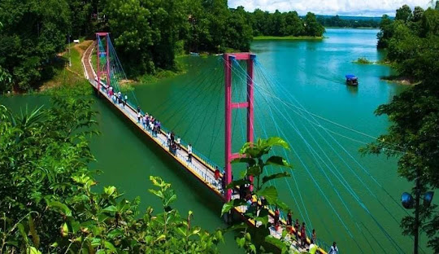
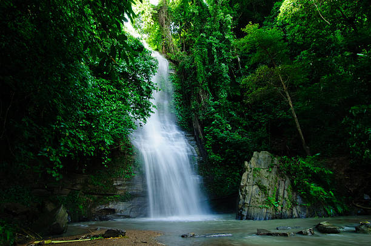

Nature Of Rangamati
Rangamati is a district in southeastern Bangladesh that's known for its natural beauty, cultural heritage, and ethnic diversity.Rangamati is a district located in the southeastern part of Bangladesh, known for its picturesque landscapes, ethnic diversity, and rich cultural heritage. It is one of the most popular tourist destinations in Bangladesh, attracting visitors from different parts of the world.
Location
Rangamati is located in the Chittagong Division, bordered by India to the north and east, and Myanmar to the east. It's the only district in Bangladesh with international borders with two countries.
Size
Rangamati is the largest district in Bangladesh by area, covering 6,116 square kilometers.
People
Rangamati is home to many indigenous communities, including the Chakma, Marma, and Tripura. The majority of the non-tribal population are Muslim, while most of the tribals are Buddhist.Rangamati is also a popular destination for cultural tourism because of its ethnic diversity and rich cultural heritage. The district is home to many indigenous communities, including the Chakma, Marma, and Tripura.Rangamati is also blessed with natural beauty, with the Kaptai Lake, the highest peak in Bangladesh - Keokradong, and several waterfalls and hills, making it a favorite spot for nature lovers.

